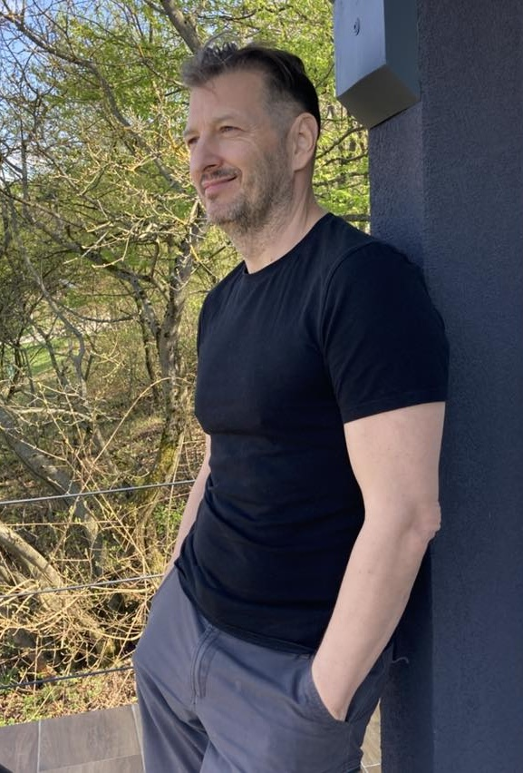

Üdvözöllek világomban!

1991 óta kíváncsiskodom a létezés és az emberi lét nagy kérdéseivel kapcsolatban - tengernyi értékkel, szuper módszerekkel és csodálatos tanítókkal találkozva.
Ennyi idő alatt sikerült elérnem azt, hogy bizonyosan tudom, hogy nem sokat tudok. 😁
Ami pedig működik, ezt elsajátítottam, tanulom, beintegrálom és igyekszem átadni a hozzám fordulóknak.
Segítettem már néhány ezer embernek - 11 országban, írtam egy könyvet, létrehoztam egy helyet, ahol megpihenhetsz, és van egy vízióm is, ahogy a körülöttem lévőkkel kapcsolódni szeretnék.
Nézz körül, hátha hozzájárulhatunk egymás életéhez! 🤗
Élvezd a létet és ragyogj,
Ruppert Endre Lucien
( alkotó néven Lucien del Mar )